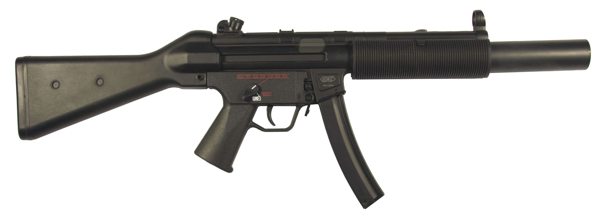

MP 5
The Heckler & Koch MP5 (from German: Maschinenpistole 5, "machine pistol model 5") is a 9mm submachine gun of German design, developed in the 1960s by a team of engineers from the German small arms manufacturer Heckler & Koch GmbH (H&K) of Oberndorf am Neckar. There are over 100 variants,[4] including a semi-automatic version.
- Range: 200 metres
- 8.9" barrell
- Capacity: 30 rounds